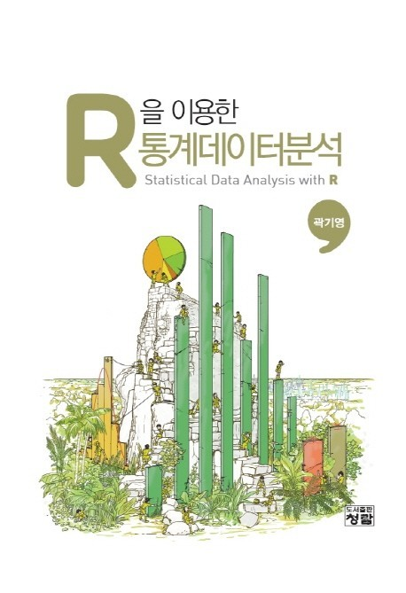

KNOWLEDGE BASE
KNOWLEDGE BASE는 내가 읽은 전공 서적을 소개하는 페이지이다. 전공에 대한 지식을 얕지 않고 깊게 쌓고싶다. 그래서 이 곳에 하나하나 기록한다.
점점 많은 양에 전공 서적을 읽는 것이 목표이다.
궁금하신 점은 아래를 확인하고 연락주세요.
편안히 구경하고 가시면 좋겠습니다 :) 오늘도 좋은 하루!
KNOWLEDGE BASE는 내가 읽은 전공 서적을 소개하는 페이지이다. 전공에 대한 지식을 얕지 않고 깊게 쌓고싶다. 그래서 이 곳에 하나하나 기록한다.
점점 많은 양에 전공 서적을 읽는 것이 목표이다.
궁금하신 점은 아래를 확인하고 연락주세요.
편안히 구경하고 가시면 좋겠습니다 :) 오늘도 좋은 하루!

이 책은 경영학 에 대해 다룬 원론서이다. 경영학 원론의 기초적이고 전반적인 내용을 학습할 수 있도록 구성되어있다. 이 책은 변화하는 관리의 패러다임에서 “21세기 리더는 어떻게 회사를 성공적으로 관리할 수 있는가?”라는 핵심 질문과 관련된 내용을 통합적으로 다룸으로써 리더십 역할에 대비할 수 있게 도움을 준다. 이 책에서는 경영관리의 원칙, 목적, 관점에 대해 저술하면서 3가지 중요한 요인, ① 전략적 포지셔닝, ② 조직설계, ③ 개별적 리더십 사이의 상호연결성을 보여준다.

1학년 2학기에 배운 전공 서적인 R을 이용한 통계데이터분석이다. 이 책을 배우면서 R의 매력에 빠져들게 되었다. 오픈소스인 R의 큰 장점은 확장성에 있다. R 환경에서 통계데이터분석 기법을 선택하고 활용하는 데 있어서 제약이 없기 때문에 거의 모든 분석을 수행할 수 있는 것이다. 이 책에는 활용도가 높은 분석기법과 기법을 적용하는 방법과 출력결과가 담고 있는 의미까지 설명해준다.